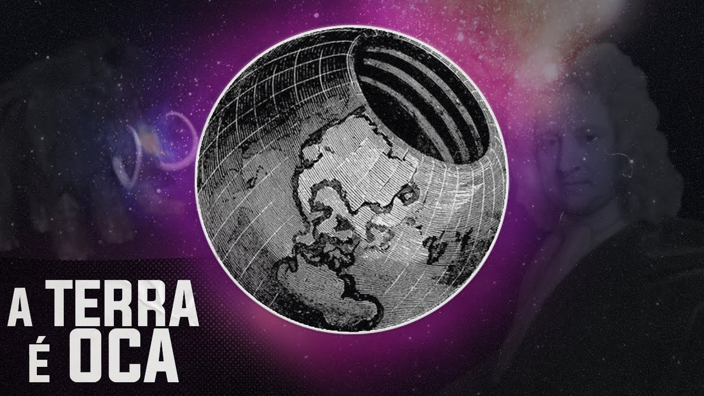

Terra oca

O que é a Teoria da Terra Oca?
A da Terra Oca propõe que o planeta Terra possui um espaço interno habitável e oco , onde poderiam existir continentes, oceanos, civilizações avançadas, ou seres ocultos. Essa ideia contradiz a geologia moderna, mas ganhou popularidade em diferentes períodos da história, muitas vezes sendo ligada a teorias conspiratórias e lendas antigas.
Origens e Desenvolvimento
Antiguidade e Mitologia
Mitologia grega e nórdica mencionam reinos subterrâneos como o Hades ou Niflheim.
Povos indígenas norte-americanos (ex: Hopi) falam de ancestrais que viveram sob a Terra.
Na Índia antiga, há referências ao mundo subterrâneo de Patala, onde existiriam seres diferentes da superfície.
Século XVII – Primeira proposta científica
Edmond Halley (1692), o mesmo do cometa Halley, propôs que a Terra seria composta por cascas concêntricas ocas e núcleos internos luminosos.
Justificativa: Anomalias no campo magnético terrestre.
Propôs três conchas internas girando independentemente, cada uma com sua atmosfera.
Século XIX – Popularização esotérica
John Cleves Symmes Jr. (1818) promoveu a ideia de grandes aberturas nos polos (os “Buracos de Symmes”) e tentou organizar expedições ao Ártico.
Jules Verne, em Viagem ao Centro da Terra (1864), descreveu um mundo subterrâneo com oceanos e criaturas pré-históricas — influenciando o imaginário popular.
Variações da Teoria
1. Terra Oca Clássica
Proposta por Halley e Symmes.
Terra seria como uma concha oca com entradas nos polos.
Pode conter um “Sol interior” (pequeno núcleo radiante).
2. Terra Côncava
A humanidade vive dentro da Terra, em sua superfície interna, e o universo está no centro.
Proposta por Cyrus Teed no século XIX (Koreshanity).
Rejeita o modelo heliocêntrico.
3. Agartha e civilizações ocultas
Suposta civilização subterrânea avançada chamada Agartha.
Algumas versões incluem Shambhala, capital espiritual conectada por túneis.
Relacionada ao ocultismo, esoterismo tibetano e misticismo.
4. Contato com alienígenas e nazismo
Teóricos da conspiração alegam que nazistas fugiram para a Terra Oca após a Segunda Guerra Mundial.
Outros dizem que seres reptilianos ou extraterrestres vivem em bases subterrâneas, como em Dulce (EUA) ou sob a Antártica.
A teoria é usada em tramas de ficção e OVNIs.
Críticas e Refutações(Ciência Moderna vs Terra Oca)
Evidências científicas
1. Sismologia:
Estudos sísmicos mostram que a Terra é composta por camadas sólidas e líquidas, não ocas.
Ondas sísmicas viajam através da Terra, revelando sua estrutura interna.
2. Gravidade:
Se a Terra fosse oca, a gravidade seria muito diferente.
Modelos gravitacionais não suportam essa estrutura.
3. Exploração Polar:
Nenhuma expedição científica encontrou buracos nos polos.
Satélites confirmam estrutura sólida.
4. Geotermia:
A temperatura aumenta com a profundidade (gradiente geotérmico), o que inviabiliza vida complexa.
5. Geofísica computacional:
Simulações de placas tectônicas, vulcanismo e formação planetária contradizem a teoria.
Conclusão Final